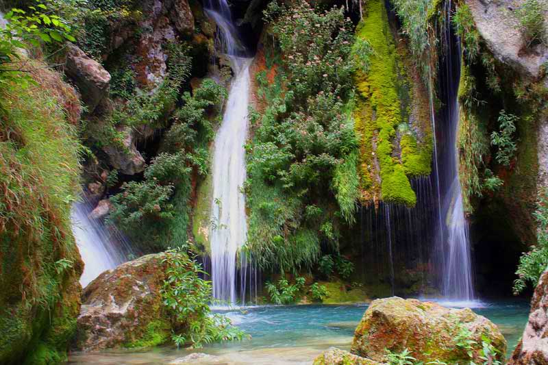

Naturaleza
Navarra y sus alrededores, son tierras de contrastes. En menos de 100 km, podemos pasar de un desierto, al más húmedo bosque continental. Podemos estar a 200 metros de altitud y en 20 minutos a más de 2000 metros. Todo ello, junto con la cercanía de las playas vascas, crea un entorno donde puede visitar todo tipo de naturaleza

Bardenas Reales de Navarra

Cueva de Mendukilo

Foz de Lumbier

Laguna de Pitillas

Manadero Queiles

Nacedero Queiles

Nacedero Urederra

Peñalén

Selva de Irati
